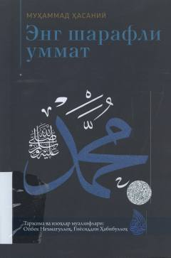

ESIslom ummatining fazilatlari va Alloh tomonidan berilgan imtiyozlar haqidagi ilmiy asar.
Ushbu asarda Islom ummatining boshqa ummatlardan ajralib turadigan fazilatlari va Alloh taolo tomonidan berilgan imtiyozlar ilmiy asosda yoritilgan. Kitob mo'min-musulmonlarni ezgulikka chorlash va Islom dinining mukammalligini anglatish maqsadida yozilgan.